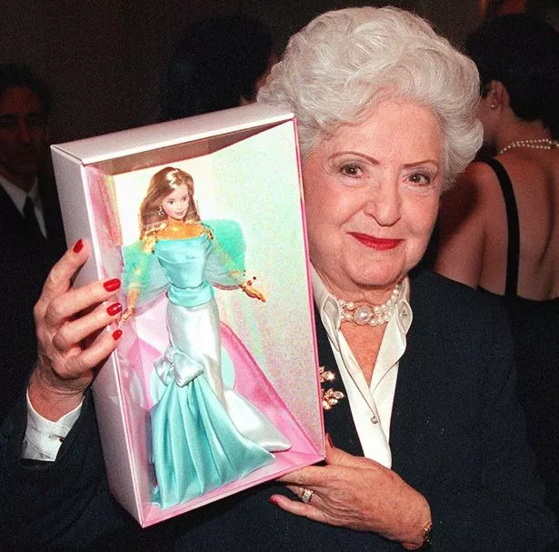

On March 9th, 1959, the first Barbie doll was introduced, adapted from the Bild Lilli doll, three years after Ruth purchased three of these dolls for her daughter Barbara. The Barbie doll wore a black and white striped bathing suit, making it the first adult doll whose appearance was controversially popular with children.
Welcome doll!
About Barbie's creator - Ruth Handler

The creation of Barbie
Ruth Handler created the iconic Barbie doll, inspired by her daughter Barbara. Ruth observed Barbara and her friends using baby dolls to role-play adult scenarios. She noticed that in the 1950s, there was no representation of adult female bodies except for the Bild Lilli doll, which had bulging breasts and was commonly sold in tobacco shops, bars, and adult stores. These controversial dolls were marketed primarily towards men as gag gifts at bachelor parties or suggestive mementos. Bild Lilli dolls served as the inspiration for the globally recognised Barbie brand.
A timeline of Barbie's evolution
From the dolls creation in 1959 to her status as an inspirational female icon today
-
1959
-
1960
Barbie's first career doll, introduced in 1960, started a trend of showcasing Barbie in various professional roles, from fashion designer to flight attendant, and many more diverse positions in prestigious sectors. Her career trajectory is a triumph of feminist ambition!
-
1968
The first African American Barbie doll, named Christie, was released during the civil rights movement, featuring a dark complexion and expanding Barbie's representation and inclusivity. Around the same time, the first Hispanic Barbie doll was also introduced. Today, diversity is one of the most essential aspects of the Barbie brand."
-
1992
Totally Hair Barbie was launched with floor-length hair measuring 11.5 inches. She set a record by becoming the best-selling Barbie doll in history, generating $100 million in worldwide sales.
-
2009
Barbie celebrated her 50th anniversary with the doll wearing a glamorous, glittery gold dress. The brand debuted a runway show during New York Fashion Week, featuring dresses designed by the top 50 names in the fashion world, highlighting Barbie's impact on fashion and culture.
-
2015
Barbie introduced three new body types —tall, petite, and curvy, along with 22 ethnicities and 35 skin tones. The brand aimed to transform the Barbie range into a 'mirror image of the real world,' promoting diversity and inclusion.
-
2022
Barbie's Dreamhouse was recreated in real life as an interactive attraction, allowing fans to step into her world. It has been featured in various U.S. cities, including the iconic Malibu. The attraction includes a walk-in closet showcasing Barbie's different career outfits, her iconic pink caravan, and a real ball pit and pool that fans can jump into in her backyard!
-
2022 - present
With the rise of AI, Barbie became the first to introduce 'Hello Barbie,' an AI-powered doll that uses speech recognition and progressive learning to interact with children in more personalised ways, enhancing the play experience. Fans can now live the dream of having conversations with their favorite toy.